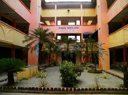
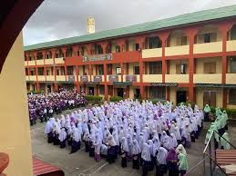
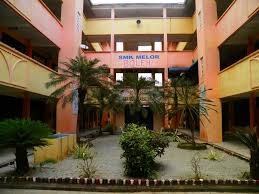
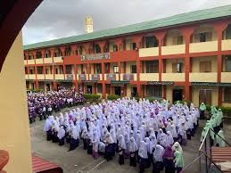

My Education Journey
My journey in education has been filled with memorable milestones and consistent hard work. I began my schooling years with a strong foundation at primary school, achieving excellent results in the UPSR with 6As. This early success motivated me to strive further.
In my religious education, I earned 8As in the UPKK exam, reflecting both my academic and spiritual development. These achievements helped me build strong discipline and time management skills.
I continued to excel during secondary school, where I proudly scored 3As in the SPM examination. These results opened many doors and further confirmed my dedication to learning and personal growth.
My passion for knowledge and curiosity in various subjects have shaped who I am today — someone who values education as a lifelong journey.
 


